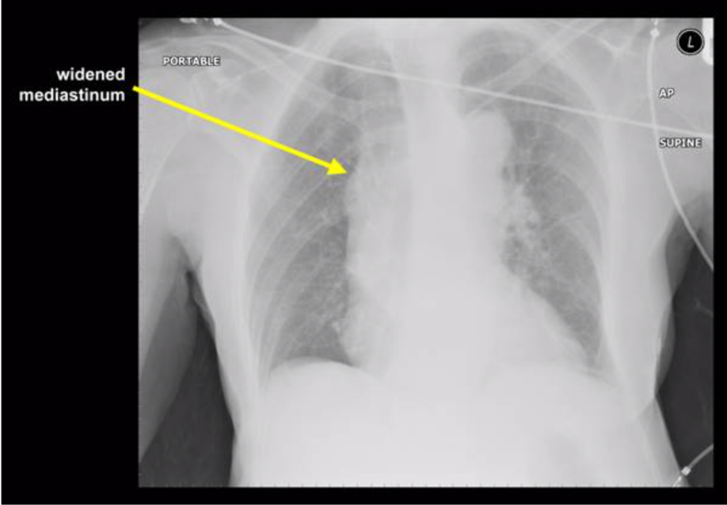

Cases
Case 1: A 58-year-old male presents with severe chest pain that began one hour ago. He has no medical problems but cannot remember the last time he saw a physician. Vitals include a HR of 78, BP of 129/65, respiratory rate of 20, and oxygen saturation of 98%. The nurse hands you the EKG, which is concerning for an inferior STEMI with ST elevation in leads II, III, and aVF with depression in I and aVL. Prior to sending this patient to the cath lab for PCI, what other life-threatening conditions must you consider?
Case 2: A 68-year-old male presents by EMS as a stroke alert. On exam, the patient has expressive aphasia, left gaze deviation, and right upper extremity and lower extremity weakness. Vital signs include a HR of 120, BP of 190/115, RR of 20, oxygen saturation of 97%, and glucose of 95. His last reported time of normal was about two hours prior. Head CT is negative for intracranial hemorrhage. What conditions other than ischemic stroke should you consider prior to giving this patient thrombolytics?
Pearls
- Chest pain that is severe, sudden in onset, or migratory is concerning for aortic dissection (AD).
- The presentation of AD can be likened to that of subarachnoid hemorrhage, with chest or back pain that is severe, sudden in onset, and/or maximal in onset concerning for AD.
- If concerned for AD, do a bedside ultrasound to visualize the aortic arch for a dissection and heart to evaluate for pericardial effusion or aortic insufficiency.
- Risk factors for AD include history of hypertension, history of aorta pathology, Marfan syndrome, bicuspid aortic valve, or previous cardiac surgery.
- On presentation in the ED, only half of patients with acute AD are hypertensive.
- Findings on exam with the highest +LR for acute AD are hypotension, pulse deficits, and focal neurologic deficits.
- AD can present similarly to several critical time-sensitive diagnoses, including acute myocardial infarction, acute stroke, and shock.
- AD can lead to ST elevation on ECG, most commonly in an inferior distribution (leads II, III, and aVF).
- AD needs to be considered in all patients with chest, abdominal or back pain, syncope, or stroke symptoms.
- More research is needed on the utility of D-dimer in ruling out AD.
- The most common finding on chest X-ray with AD is a wide mediastinum and/or aortic knob; however, a normal chest X-ray does not rule out AD.
Introduction
The aorta is the largest artery in the human body, supplying oxygenated blood from the heart to every major organ system in the body. It consists of three layers: the intima (inner layer), media (middle layer), and adventitia (outer layer).1 Aortic dissection (AD) occurs when a rip or tear in the intima leads to the creation of a false lumen that expands into the media.2 This dissection can extend either distally (away from the heart) or proximally (towards the heart). This passage of blood flow into the false lumen can lead to extension of the dissection and can further compromise blood flow to major organs.3 Proximal dissections extending in a retrograde manner can affect the aortic valve, coronary arteries, or pericardium leading to aortic insufficiency, coronary artery dissection, and/or tamponade, respectively.2 AD can also lead to rupture of the aorta, which is uniformly fatal.4 Given the high rate of mortality associated with AD, the emergency physician must have a high suspicion for this condition and be ready to rapidly diagnose and manage patients with acute AD.
Classification
AD is generally classified with either the Stanford or DeBakey classification system. These systems delineate the aorta as either “ascending” or “descending.” The ascending aorta includes the aorta from the aortic valve to the end of the aorta arch at the left subclavian artery and the descending aorta begins distal to the left subclavian artery.2 A Stanford Type A dissection involves the ascending aorta, while a Stanford Type B dissection only involves the descending aorta (Figure 1).5 About two thirds of dissections are Stanford A dissections (involve the ascending aorta).6 The DeBakey classification system is slightly more complex and has three classifications.7 A DeBakey Type I dissection originates in the ascending aorta, travels through the aortic arch, and continues into the descending aorta.7 A DeBakey Type II starts in the ascending aorta but does not extend to the descending aorta.7 A DeBakey Type IIIa starts in the descending aorta but does not continue to the abdominal aorta, while a Type IIIb dissection starts in the descending aorta and continues to the abdominal aorta.7

Risk Factors
Risk factors for AD are helpful to consider when deciding which patients need further evaluation. The mean age of occurrence of AD is 63 years, with the majority of cases occurring in patients between 50 and 65.6 In patients younger than 40, 59% of cases of AD are associated with Marfan syndrome, bicuspid aortic valve, or cardiac surgery.6 With Marfan syndrome, the most common pathology of the aorta is dilation of the proximal aorta, which greatly increases the risk for a type A dissection.8 Marfan syndrome should be suspected in patients who are tall and thin with unusually long arms, legs, fingers, or pectus excavatum on exam.8 Other connective tissue diseases linked with aortic dissection include Ehlers-Danlos and Loeys-Dietz syndromes.9,10 Bicuspid aorta valves are estimated to be present in 1-2% of the population and are found in 9-13% of patients with AD.11 Other major risk factors for AD include hypertension (76%), atherosclerosis (27%), presence of an aortic aneurysm (16%), cocaine use (1.8%), or connective tissue disease.6Additionally, pregnancy confers a 4-fold increased risk of aortic dissection.12 Family history of aortic dissection, aorta pathology, bicuspid aortic valve, or sudden cardiac death should also raise suspicion of AD.13
Clinical Presentation
Aortic dissection is often difficult to diagnose, with studies showing up to 38% of patients with AD are missed on initial presentation.4,14-16 The textbook presentation of AD is sudden onset, severe ripping or tearing chest or back pain.2 Factors with positive likelihood ratios (+LRs) on history and exam for AD include tearing or ripping pain (+LR 10.8), migrating pain (+LR 7.6), sudden-onset chest pain (+LR 2.6), focal neurologic deficits (+LR 6.0-33), pulse deficit (+LR 5.7).17 The International Registry of Acute Aortic Dissection (IRAD) database has shown that 85% of patients with Stanford A dissections will have sudden onset of pain, with 79% of patients having pain in their chest.4 The pain is described as severe or the worst ever in 90% of patients.4 Tearing or ripping pain is present in 30-40% of cases.13 Pain that migrates may also be suggestive of aortic pathology, but this is only reported in 16% of patients with acute AD.4 Along with migratory pain, a patient complaining of pain above and below the diaphragm is concerning for aortic pathology.18 The pain associated with AD can be likened to the thunderclap headache associated with subarachnoid hemorrhage, and AD must be suspected in any patient presenting with sudden onset, maximal in onset, or severe chest or back pain.
Unfortunately, if the emergency physician only considers AD in patients with the classic presentation of sudden onset “worst of life” chest or back pain, a significant number of patients with AD may be missed. While the pain is typically severe and sudden onset, patients may complain of a more gradual onset of pain that is more consistent with alternative etiologies such as acute coronary syndrome, gastroesophageal reflux, or musculoskeletal disease.2 Up to 17% of patients with acute AD may present without pain altogether.19 Patients without pain are more likely to present with significant altered mental status, syncope, or focal neurologic deficits such as dysarthria or aphasia.20,21 AD is associated with neurologic symptoms in 17-29% of cases, which may mimic an acute cerebrovascular accident.20,21 Patients may also present primarily with syncope, which occurs in 9-13% of AD.4 Additionally, patients with retrograde dissection leading to pericardial effusion and tamponade or aortic insufficiency may present in shock.2
Classic physical examination findings for acute AD are present in less than a third of cases, and the patient with acute AD may have a normal exam. Blood pressure at presentation is variable, with 49% of patients having hypertension (SBP > 150 mm Hg), 34.6% with normotension, and 8% with hypotension (SBP < 100), and 8% in frank shock (SBP < 80).4 Up to 40% of patients with AD will have an aortic insufficiency or regurgitant murmur.4 30% of patients with a Stanford A dissection and 15% with a Stanford B dissection will demonstrate a pulse deficit.6 The commonly taught finding of a difference of systolic blood pressure between arms of at least 20 mm Hg is not specific, as 20% of the population has a blood pressure differential at baseline without AD.22
A meta-analysis on the history and exam features predictive of acute aortic dissection found the clinical signs most suggestive for acute AD were focal neurologic deficits, pulse deficits, and hypotension (BP <90 mm Hg) or signs of shock.17 This meta-analysis found that other traditional signs, including history of hypertension, syncope, chest pain, abdominal pain, tearing pain, or migrating pain, were weak predictors of acute AD. Exam findings of pulmonary edema, an aortic insufficiency murmur, and hypertension on presentation were also not strong indicators of acute AD.
In summary, in terms of the history and exam, no one factor on presentation or exam is sensitive or specific enough to either rule in or rule out acute AD. In contrast, the physician must use the whole picture of the patient’s history, exam, and risk factors to risk stratify the possibility of AD. Historical factors that must be obtained included severity of chest pain, abruptness of onset, and radiation or migration of pain. Exam features concerning for acute AD include focal neurologic deficits, shock or hypotension, and pulse deficits.
Laboratory Evaluation
D-dimer has been studied as a tool to help exclude AD. When < 500 ng/mL within 24 hours of symptom onset, D-dimer has demonstrated a negative LR of 0.07 for AD.23 The ADvISED trial in 2017 examined the use of the Aortic Dissection Detection Risk Score (ADD-RS), shown in Table 1, combined with a D-dimer.24 The authors found that an ADD-RS of 0 with a negative D-dimer had a sensitivity of 99.6% for AD, while an ADD-RS of 1 with a negative D-dimer had a sensitivity of 98.8% for AD.24 However, this is an observational study with many confounding factors, so more research is necessary prior to clinical use. For more on the ADvISED trial, visit here. ACEP has a Level C recommendation to not rely on D-dimer alone to exclude the diagnosis of AD.25
TABLE 1
Aortic Dissection Detection Score
| Predisposing Conditions |
Pain Features |
Physical Exam Findings |
| Marfan Syndrome |
Abrupt Onset of Pain |
Pulse Deficit or SBP Differential |
| Family History of Aortic Disease |
Severe Pain Intensity |
Focal Neurological Deficit + Pain |
| Known Aortic Valve Disease |
Ripping or Tearing Pain |
New Aortic Insufficiency Murmur + Pain |
| Recent Aortic Manipulation |
|
Hypotension/Shock State |
| Known Thoracic Aortic Aneurysm |
|
|
| If positive in any column, then add one point |
Imaging
Diagnostic tools for evaluation of AD include chest X-ray, bedside ultrasound, and CT angiography of the aorta. Chest X-ray may be helpful in the evaluation of AD, as a majority of patients with AD have abnormal chest X-ray findings. However, around 12.4% of patients with AD will have a normal chest X-ray.2,4,13 Common abnormalities on chest X-ray due to acute AD include widening of the mediastinum (61.6% of cases), widened aortic knob or abnormal contour (49.6%), unilateral or bilateral pleural effusions (19.2%), or separation of an intimal calcification from the outer border of the aortic knob by < 1 cm (14.1%).2,4,13
Figure 2: CXR demonstrating a widened mediastinum, concerning for acute AD.

Bedside US may be helpful in the management of acute AD, as the aortic root and ascending aorta may be visualized. 2 retrospective studies and 1 prospective study reported the sensitivity of TTE for AD to be 59% to 88% for experienced sonographers.26-28 Bedside US is also crucial in the crashing AD patient, as US will provide rapid information the patient’s cardiac output and whether a pericardial effusion is leading to tamponade physiology. Additionally, US can be used to attempt to visualize the aortic arch, which is displayed here.
The gold standard for diagnosis of AD is computed tomography angiography (CTA) of the aorta.CTA aorta is reported to have a sensitivity of nearly 100% and specificity of 100% in diagnosis of acute AD.29 ACEP clinical guidelines has a Level B recommendation that supports the use of CTA of the aorta for diagnosis of AD.25
Mimics of Acute Aortic Dissection
Due to the variety in clinical presentation, aortic dissection may be misdiagnosed as multiple other conditions. Several life-threatening conditions that aortic dissection may mimic include acute coronary syndrome (ACS), acute cerebrovascular accident, and undifferentiated shock.
Acute Coronary Syndrome
A potential misdiagnosis of AD is ACS. Aortic dissection may present with ischemic findings on EKG, which may easily be confused with ACS. ECG findings vary significantly, with one study finding ST depression in 22%, T wave changes in 8%, and ST segment elevation in 8% of patients with AD.30 This study found that ST elevation occurred in the inferior leads in 75% of cases and the high lateral lead (lead I and aVL) in 25%.30 The IRAD database found the most common ECG abnormalities in patients with AD were nonspecific ST/T wave changes (41%), left ventricular hypertrophy (26%), ischemic patterns (15%), and infarction patterns (11%).4 These EKG changes may be due to retrograde extension of the dissection leading to a coronary artery dissection, which most commonly occurs with right coronary artery due to its anterior location.2
If a patient an ischemic pattern on ECG from acute AD is misdiagnosed with ACS, the results can be fatal. Both anticoagulation and fibrinolysis can lead to worsening aortic dissection and hemorrhagic pericardial effusion, and percutaneous coronary intervention will not help with management of acute AD. If a patient presents with an inferior STEMI pattern on ECG, especially if the patient has features concerning for AD such as tearing, ripping, or severe chest pain, widened mediastinum on CXR, pulse deficits, or neurologic deficits—fibrinolytics and anticoagulation should be held and the patient should receive a CTA aorta to further evaluate for AD. It is vital the emergency physician consider aortic dissection for all patients presenting with chest pain, even if they have ST elevation or depression on ECG, as misdiagnosing acute AD as a STEMI or ACS will have drastic implications for the patient’s care.
Acute Stroke
AD may easily be confused with acute ischemic stroke, as AD is associated with neurologic symptoms in 17-29% of cases.20,21 Of patients with AD presenting with neurologic symptoms, approximately 53% have ischemic stroke as their causative etiology.20 Patients with neurologic symptoms secondary to AD may be especially difficult to diagnose, as up to one third of patients presenting with neurologic features do not complain of chest pain.21,30 Initial assessment may be further complicated by altered mental status, aphasia, dysarthria, leading to difficulty in gathering an accurate history.20,21 Given the difficulty in diagnosing AD and the high mortality rate, the Emergency Physician must consider AD in patients with focal neurologic symptoms concerning for an ischemic stroke, especially if they are aphasic or altered and unable to give a history. Similarly to misdiagnosing AD as ACS, if a patient with acute AD is misdiagnosed as an acute ischemic stroke and receives thrombolytics, the results will be disastrous for the patient.
Shock
Patients with acute AD may present in frank shock, which may occur in up to 16% of patients.2,4 Multiple reasons account for AD leading to shock, including cardiogenic shock from acute aortic insufficiency, obstructive shock from a retrograde dissection leading to pericardial effusion and tamponade, or aortic rupture.2 Pericardial effusion and tamponade was found to occur in 13% of patients with a Stanford A dissection in the IRAD study.4 Shock is a poor prognostic finding in acute AD, with a 3-7 times increased risk of death.32-34 In patients presenting in a shock state, bedside US is essential to determining the etiology of shock and can rapidly evaluate for cardiac tamponade and causes of cardiogenic shock such as acute aortic insufficiency.
Other mimicking conditions
Unfortunately, acute AD can present similarly to multiple conditions other than those already discussed. Due to the passage of the aorta through the thorax and abdominal cavity, AD can present with chest pain, back pain, abdominal pain, flank pain, syncope, neurologic deficits, or hypotension. While working up every patient with the above chief complaints would be expensive, inefficient, and impractical, AD must be at least considered in the differential diagnosis of ACS, pericarditis, tamponade, pulmonary embolism, cholecystitis, gastritis, nephrolithiasis, syncope, stroke, altered mental status, and shock.
Pitfalls
In evaluation of rare but deadly conditions, such as aortic dissection, the clinician must be aware of cognitive biases that may influence clinical decision making. A bias easy to fall prey to is anchoring. For instance, it is easy to assume the patient with a history of CAD and previous myocardial infarctions presenting with chest pain is going to be a straightforward ACS evaluation. By anchoring on a diagnosis of ACS, the clinician may miss the subtle red flag concerning for another condition, such as the patient describing sudden-onset sharp pain or migratory pain that is more suspicious for aortic dissection. Another cognitive pitfall is not considering the atypical presentation of a disease. Unfortunately, for aortic dissection, atypical is typical, and if the diagnosis is not considered, it will often be missed.
Case Conclusions
Case 1: For the 51-year-old male with an ECG concerning for a STEMI with ST elevation in leads II, III, and aVF, you remember that acute aortic dissection can present as a STEMI and further inquire about the pain. The patient describes it as severe, occurring suddenly while he was watching television. On exam, you notice his left radial pulse feels weaker than his right. Stat Chest X-ray is concerning for a wide mediastinum. Concerned for a Stanford Type A dissection, you send the patient to the CT scanner for a stat CTA of his aorta. You order the patient fentanyl for his pain, along with an esmolol and nicardipine infusion. CTA aorta shows a Stanford Type A dissection, and you page cardiothoracic surgery for operative repair.
Case 2: For the 68-year-old male presenting with focal neurologic symptoms and a normal head CT, you speak with neurology and decide to order tPA due to concern for an acute ischemic stroke. Additionally, you order a nicardipine infusion, as the patient’s blood pressure of 190/115 is currently above the threshold for tPA. To gather more history, you call the patient’s wife, and she states the patient was complaining of severe chest pain minutes prior to developing weakness and dysarthria. Concerned for a potential aortic dissection leading to an acute stroke, you tell the nurse to hold the tPA, and you take the patient back to the CT scanner for CTA head, neck, and aorta, which reveals a Stanford Type A dissection with a left internal carotid artery dissection. You order an esmolol drip in addition to the nicardipine infusion, and consult cardiothoracic surgery and re-page the Neurology service to update them on the patient’s presentation.
References
- Coady MA, Rizzo JA, Goldstein LJ, et al. Natural history, pathogenesis, and etiology of thoracic aortic aneurysms and dissections. Cardiol Clin. 1999;17(4):615-635.
- Lo BM. An evidence-based approach to acute aortic syndrome. Emerg Med Pract. 2013 Dec;15(12):1-23; quiz 23-4.
- Hardie AD, Wineman RW, Nandalur KR. The natural history of acute non-traumatic aortic diseases. Emerg Radiol. 2009;16(2):87-95.
- Hagan PG, Nienaber CA, Isselbacher EM, et al. The International Registry of Acute Aortic Dissection (IRAD): new insights into an old disease. JAMA. 2000;283(7):897-903.
- Daily PO, Trueblood HW, Stinson EB, Wuerflein RD, Shumway NE. Management of acute aortic dissections. Ann Thorac Surg. 1970;10(3):237–247.
- Evangelista A, Isselbacher EM, Bossone E, et al. Insights from the International Registry of Acute Aortic Dissection: a 20-year experience of collaborative clinical research. Circulation. 2018;137(17):1846–1860.
- Debakey ME, Henly WS, Cooley DA, et al. Surgical management of dissecting aneurysms of the aorta. J Thorac Cardiovasc Surg. 1965;49:130-149.
- Milewicz DM, Dietz HC, Miller DC. Treatment of aortic disease in patients with Marfan Syndrome. Circulation. 2005;111(11):e150-e157.
- Januzzi JL, Isselbacher EM, Fattori R, et al. Characterizing the young patient with aortic dissection: results from the International Registry of Aortic Dissection (IRAD). J Am Coll Cardiol. 2004;43(4):665-669.
- Oderich GS, Panneton JM, Bower TC, et al. The spectrum, management and clinical outcome of Ehlers-Danlos syndrome type IV: a 30-year experience. J Vasc Surg. 2005;42(1):98-106.
- Roberts CS, Roberts WC. Dissection of the aorta associated with congenital malformation of the aortic valve. J Am Coll Cardiol. 1991;17(3):712–716.
- Kamel H, Roman MJ, Pitcher A, Devereux RB. Pregnancy and the risk of aortic dissection or rupture: A cohort-crossover analysis. Circulation. 2016;134(7):527–533.
- Klompas M. Does this patient have an acute thoracic aortic dissection? JAMA. 2002;287:2262-2272.
- Chua M, Ibrahim I, Neo X, et al. Acute aortic dissection in the ED: risk factors and predictors for missed diagnosis. Am J Emerg Med. 2012;30:1622-1626.
- Asouhidou I, Asteri T. Acute aortic dissection: be aware of misdiagnosis. BMC Res Notes. 2009;2:25.
- Eagle KA, Quertermous T, Kritzer GA, et al. Spectrum of conditions initially suggesting acute aortic dissection but with negative aortograms. Am J Cardiol. 1986;57:322-326.
- Ohle R, Kareemi HK, Wells G, et al. Clinical examination for acute aortic dissection: a systematic review and meta-analysis. Acad Emerg Med. 2018;25:397-412.
- Mattu A, Swaminathan A. Aortic dissection. Emergency Medicine: Reviews and Perspectives. Jan 2019. emrap.org. Accessed 29 April 2020.
- Imamura H, Sekiguchi Y, Iwashita T, et al. Painless acute aortic dissection: diagnostic, prognostic and clinical implications. Circ J. 2011;75(1):59-66.
- Gaul C, Dietrich W, Friedrich I, et al. Neurological symptoms in type A aortic dissection. 2007;38(2):292-297.
- Kawarabuki K, Sakakibara T, Hirai M, et al. Acute aortic dissection presenting as a neurologic disorder. J Stroke Cerebrovasc Dis. 2006;15(1):26-29.
- Singer, AJ et al. Blood pressure. Assessment of interarm differences. Arch Intern Med. 1996 Sep 23;156(17):2005-8.
- Suzuki T, Distante A, Zizza A, et al. Diagnosis of acute aortic dissection by D-dimer: the International Registry of Acute Aortic Dissection Substudy on Biomarkers (IRAD-Bio) experience. Circulation. 2009;119(20):2702–2707.
- Nazerian P, Mueller C, Soeiro AM, et al. Diagnostic accuracy of the aortic dissection detection risk score plus D-dimer for acute aortic syndromes: the ADvISED prospective multicenter study. 2018 Jan 16;137(3):250-258.
- American College of Emergency Physicians Clinical Policies Subcommittee (Writing Committee) on Thoracic Aortic Dissection, Diercks DB, Promes SB, et al. Clinical policy: critical issues in the evaluation and management of adult patients with suspected acute nontraumatic thoracic aortic dissection [published correction appears in Ann Emerg Med. 2017 Nov;70(5):758]. Ann Emerg Med. 2015;65(1):32–42.e12.
- Khandheria BK, Tajik AJ, Taylor CL, et al. Aortic dissection: review of value and limitations of two-dimensional echocardiography in a six-year experience. J Am Soc Echocardiogr. 1989;2(1):17-24.
- Roudaut RP, Billes MA, Gosse P, et al. Accuracy of M-mode two-dimensional echocardiography in the diagnosis of aortic dissection: an experience with 128 cases. Clin Cardiol. 1988;11(8):553-562.
- Nienaber CA, von Kodolitsch Y, Nicolas V, et al. The diagnosis of thoracic aortic dissection by noninvasive imaging procedures. N Engl J Med. 1993;328(1):1-9.
- Mussa FF, Horton JD, Moridzadeh R, et al. Acute aortic dissection and intramural hematoma: A systematic review. JAMA. 2016;316(7):754–763.
- Hiratzka LF, Bakris GL, Beckman JA, et al. 2010ACCF/AHA/AATS/ACR/ASA/SCA/SCAI/SIR/STS/SVM guidelines for the diagnosis and management of patients with thoracic aortic disease: Executive summary: A report of the American college of cardiology foundation/American heart association task force on practice guidelines, American association for thoracic surgery, American college of radiology, American stroke association. 2010;121(13).
- Collins JS, Evangelista A, Nienaber CA, et al. Differences in clinical presentation, management, and outcomes of acute type A aortic dissection in patients with and without previous cardiac surgery. Circulation. 2004;110(11 suppl 1):II237-II242.
- Santini F, Montalbano G, Casali G, et al. Clinical presentation is the main predictor of in-hospital death for patients with acute type A aortic dissection admitted for surgical treatment: a 25 year experience. Int J Cardiol. 2007;115(3):305-311.
- Mehta RH, Suzuki T, Hagan PG, et al. Predicting death in patients with acute type A aortic dissection. Circulation. 2002;105(2):200-206.